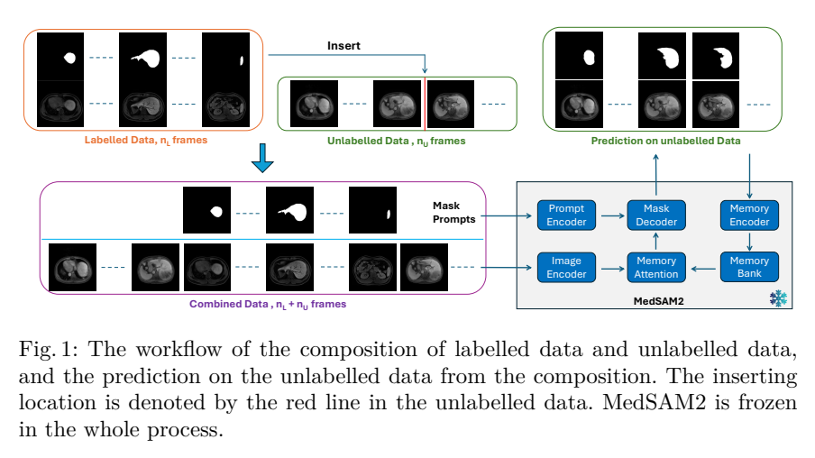
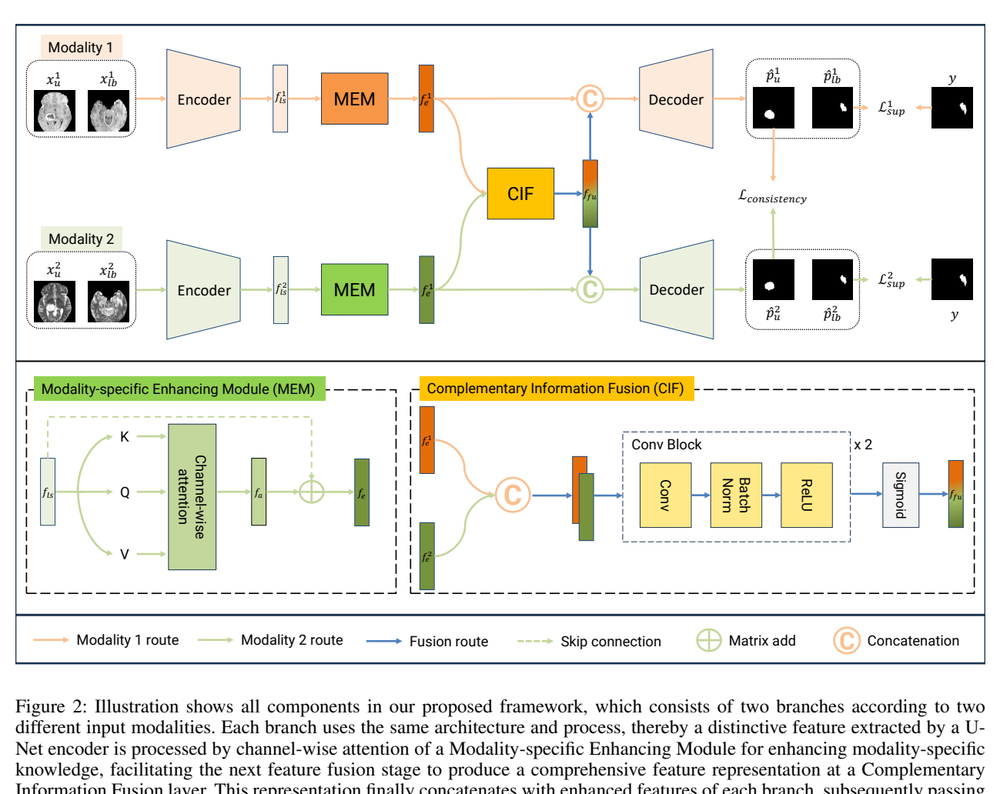
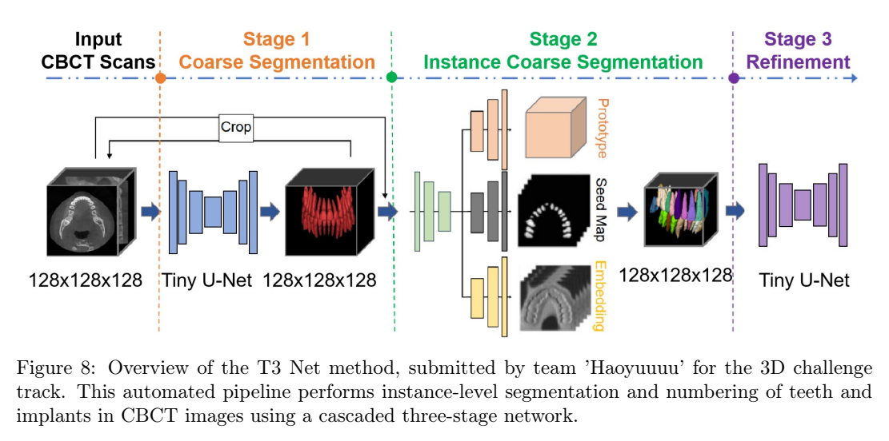
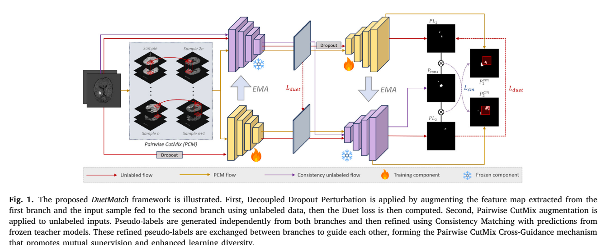

本篇未找到可可靠提取的方法流程图，请查看原文 PDF。
论文针对半监督医学图像分割中的两个核心困难：一是标注稀缺导致半监督方法相对全监督仍有明显性能差距，尤其在小目标和边界处；二是不同标注者、不同视角之间存在标注差异（annotation variance），使有限标签的利用效率下降 [p. 3][p. 4]。作者认为现有多尺度方法多在编码器端做融合，且较少把多尺度学习与半监督学习结合，因此提出“尺度感知自适应学习”范式，并引入视角差异增强来模拟标注差异 [p. 4][p. 5]。
整体流程：输入 3D 图像先经视角差异增强生成多视角体数据，随机选一个送入双分支网络；共享编码器输出分别送入低层解码器（使用第 1–4 层特征）和高层解码器（使用第 1–5 层特征），各自产生分割与回归输出；两分支分割结果经 SAR 融合为集成预测，再经 SDM 处理监督两分支回归输出 [p. 9][p. 10]。
双分支编码解码：编码器由 ConvBlock 与下采样交替组成，解码器 UpConvBlock 含卷积与反卷积上采样并保留残差连接；式 (1)–(3) 描述编码特征、下采样特征与解码特征的递推关系 [p. 9]。
尺度感知自适应重加权（SAR）：对标注数据，取低层与高层分支前两轮（第 i−1、i−2 轮）的置信度矩阵，经残差系数 α 加权当前预测概率，再求和并 softmax 得集成预测 P_ensemble；置信度 C_i 由当前预测概率与 GT 逐像素相乘得到（式 7–8），供后续轮次使用。α 经验取 0.5 [p. 10][p. 11]。对无标注数据，则直接平均两分支当前预测作为伪标签 [p. 11]。图 4 用数值示例说明 SAR 可使预测概率向 GT 收敛 [p. 11]。
视角差异增强：对输入做 3D 傅里叶变换，在频域做旋转等增强，再逆变换回空域，依次选三个视角作为输入；作者主张频域操作可同时影响局部与全局特征、避免空间旋转的插值伪影，并以不同视角预测差异作为标注者分歧的代理 [p. 12]。
训练目标：总损失 L_Semi = β·L_seg + γ·(L_plc + L_src)，β=0.5；γ 用 sigmoid ramp-up，40 轮后达到 1 [p. 13]。L_seg 为 Dice 损失加交叉熵（式 12–14）；L_plc 为两分支分割预测的均方误差（式 15）；L_src 为集成预测经 SDM 后的 P_sdm 与两分支回归预测的均方误差（式 16）[p. 13][p. 14]。SDM 由距离变换 DT、反 DT 与边界提取 FB 组合并归一化得到 [p. 14]。
作者声称的贡献有三点：SAR 策略生成更可靠的集成预测；视角差异增强与多尺度分支结合以模拟标注差异；在三个公开数据集上优于现有半监督方法并接近全监督 [p. 5][p. 6]。我的解读是：核心新意在于“双分支 + 历史置信度像素级加权 + 频域视角增强 + SDM 回归一致性”的组合，而非单一全新机制；其中 SAR 与已有不确定性加权方法的区别被作者表述为“跨轮次时间累积”而非瞬时不确定性 [p. 7]。
数据集与划分：LA 共 100 例，80 训练/20 验证，体素间距 0.625×0.625×0.625 mm³ [p. 14]；Pancreas-CT 共 82 例，62 训练/20 验证，重采样至 1.0×1.0×1.0 mm³ [p. 14]；BraTS 2019 共 335 例，仅用 T2-FLAIR 做全肿瘤分割，250 训练/25 验证/60 测试 [p. 14]。
实现：PyTorch 1.12、CUDA 11.3、NVIDIA A100；骨干为 V-Net；LA 随机裁剪 112×112×80，Pancreas-CT 与 BraTS 为 96×96×96；SGD，初始学习率 0.01，batch size 4，锐化温度 0.1；指标为 Dice、Jaccard、ASD、HD95 [p. 14][p. 15]。
LA 结果（表 1）：10% 标注（8 例标注/72 例无标注）SASNet Dice 89.62%、Jaccard 81.33%、HD95 6.59、ASD 1.89，对比次优 GALoss 的 87.86/78.55/8.01/2.07；20% 标注（16/64）SASNet 91.82/84.93/4.63/1.42，高于 MC-Net+ 的 90.12/82.12/8.07/1.99，也高于全监督 V-Net 的 91.14/83.82/5.75/1.52 [p. 16]。正文称 10% 时相对 DTC 提升 Dice 2.11%、Jaccard 3.16%，20% 时相对 MC-Net+ 提升 Dice 1.70%、Jaccard 2.81% [p. 16][p. 17]。
Pancreas-CT 结果（表 2）：10%（6/56）SASNet 76.38/62.84/13.47/1.82，优于 BCP 的 74.25/60.03/14.23/4.42；20%（12/50）SASNet 81.60/69.39/11.25/1.81，优于 BCP 的 80.37/67.81/11.53/2.06 [p. 17]。正文称 10% 时相对 URPC 提升 Dice 2.85%、Jaccard 3.40%，20% 时提升 1.58%/2.09% [p. 18]。
BraTS 结果（表 3）：10%（25/225）SASNet 82.84/73.00/10.91/2.31，优于 GALoss 的 82.13/72.11/11.25/2.39；20%（50/200）SASNet 85.84/76.79/7.52/1.62，优于 MiDSS 的 83.74/73.93/11.06/2.29，并超过全监督 V-Net 的 84.81/75.53/8.08/1.94 [p. 18]。正文称 20% 时相对 URPC 提升 Dice 3.04%、Jaccard 4.07% [p. 18]。
消融：表 4 比较分支数与损失组合，LA 上两分支仅用 L_seg 时 Dice 90.63%，比单分支 MC-Net+ 的 90.12% 高 0.51% [p. 19]。表 5 显示加入 L_src 或 L_plc 均提升，三者全用时 Dice 91.52%、Jaccard 84.42%、HD95 4.98、ASD 1.48；有/无视角增强的对比支持其有效性 [p. 19]。表 6–8 分别报告 SAR、SDM、低层分支的贡献：SAR 带来 Dice 提升 LA 0.30%、Pancreas-CT 0.74%、BraTS 0.27%；SDM 提升 0.92%/0.93%/0.52%；低层分支提升 0.71%/0.66%/0.64%（BraTS 处表格数字与正文表述存在排版错位，需谨慎）[p. 20][p. 21]。表 9 显示 4 层低层解码器优于 3 层（Dice 91.82% vs 91.20%）[p. 21]。表 10 超参消融：β=0.5、γ=1.0 带 ramp-up 最优（Dice 91.82%），无 ramp-up 为 91.36%，γ=0.5 为 91.02% [p. 22]。
复杂度：SASNet 参数量 11.26 M，FLOPs 67.31 G；URPC 为 5.85 M、69.36 G [p. 23]。
支持的结论：在三个数据集、10%/20% 标注预算下，SASNet 的 Dice 均高于表中所列半监督基线，且在 LA 20%、BraTS 20% 设置下超过全监督 V-Net，这与作者“接近甚至部分超过全监督”的主张一致 [p. 16][p. 18]。消融整体支持 SDM 与低层分支的贡献，SAR 的增益较小但方向一致 [p. 20][p. 21]。
局限与缺失证据：作者自述仅在 LA、Pancreas-CT、BraTS 三个 3D 数据集验证，未覆盖多器官、2D 切片、超声/X 射线等模态 [p. 23]。此外，表 4–8 在 PDF 文本中排版严重错位，部分行列对应关系无法可靠辨认；正文对 BraTS 低层分支提升的描述与表 8 数字不完全一致；未报告随机种子、重复实验次数、方差或显著性检验；未给出 SAR 中置信度矩阵的初始化方式与无标注数据是否参与置信度累积的细节；视角增强的旋转角度范围与三个视角的具体选择策略未量化 [p. 12]。这些缺失使结果稳健性难以独立判断。
已报告：V-Net 骨干；LA 裁剪 112×112×80，Pancreas-CT/BraTS 96×96×96；SGD 初始 lr 0.01；batch size 4；β=0.5；γ 经 sigmoid ramp-up 在 40 轮后为 1；SAR 的 α=0.5；锐化温度 0.1；数据预处理（LA 边界扩展 10–20/10–20/5–10，Pancreas-CT 重采样 1.0 mm³、HU −125–275、边缘扩展 25/25/0，BraTS 重采样 1.0 mm³）[p. 14][p. 11][p. 13]。未报告：训练总轮数、学习率衰减策略、SAR 置信度初始值、频域旋转角度分布、三个视角的选取规则、是否使用验证集选模型、代码以外的随机性控制。代码链接为 https://github.com/HUANGLIZI/SASNet [p. 3]。
原论文流程图 · Figure 1 · PDF 第 5 页

Fig.1: The workflow of the composition of labelled data and unlabelled data, and the prediction on the unlabelled data from the composition. The inserting location is denoted by the red line in the unlabelled data. MedSAM2 is frozen in the whole process. 原文来源
论文针对医学图像分割中标注成本高、全监督方法依赖大规模标注数据的问题，提出半监督分割框架 SSL-MedSAM2，并在 MICCAI 2025 CARE-LiSeg 肝脏分割任务上评估 [p. 1]。作者指出，现有半监督方法主要有两类：伪标签法与一致性正则化。伪标签法的性能依赖初始模型生成伪标签的可靠性，错误会在迭代中被放大；一致性正则化则对扰动的类型和强度敏感，弱扰动收益有限、强扰动可能损害性能 [p. 2]。作者进一步指出，多数现有半监督方法从小规模标注集从零训练，难以在初期获得可泛化特征；而 SAM/SAM2 等基础模型具备零样本与少样本能力，SAM2 的流式记忆机制还可把 3D 体积的相邻切片类比为视频帧，MedSAM2 已在大量医学分割任务上展现优势 [p. 2–3]。作者认为，已有基于 SAM 的半监督方法仍需训练或依赖 CNN 生成提示，未能直接以免训练方式把标注数据的知识迁移到未标注数据，因此提出“免训练少样本伪标签生成 + 迭代全监督精化”的组合 [p. 3]。
给定数据集 D={D_l, D_u}，其中标注子集 D_l={(x_li, y_li)}{i=1}^M，未标注子集 D_u={x_ui}{i=1}^N，且 M≪N。目标是先由 TFFS-MedSAM2 为未标注数据生成伪掩码 ŷ_ui，构造 D_up={x_ui, ŷ_ui}，再用 D_l∪D_up 做全监督训练并迭代更新伪标签 [p. 4]。
该分支使用预训练且冻结的 MedSAM2（f_θ），不做任何微调。核心设计是把一个完整标注 3D 体积随机插入到未标注体积的若干切片位置，把合并后的切片序列当作视频输入 MedSAM2；标注切片提供 mask prompt，未标注切片不提供提示，依靠 SAM2 的流式记忆在帧间传播分割 [p. 5]。图 1（第 5 页）展示了标注数据与未标注数据的组合方式及对未标注数据的预测流程，红色线表示插入位置，并注明 MedSAM2 全程冻结；依据图注与正文，插入的是完整标注体积，未标注帧本身不加提示。
对每个未标注体积 x_uj，算法 2 将 M 个标注体积分别插入 R 个随机位置，共得到 R×M 个概率图，先零初始化并累加 Sigmoid(f_θ(x_uj | {x_ci, y_li}))，再除以 R×M 取平均，最后阈值化得到二值伪掩码 [p. 6]。该过程无需用户提示、各未标注体积独立处理，通过集成提升稳健性 [p. 6]。输入帧统一缩放到 512×512，推理后再缩回原始尺寸用于伪标签生成 [p. 7]。
得到初始伪标签后，用 nnU-Net（g_θ）在 D_l 与 (X_u, Ŷ_u) 上训练。为避免更新伪标签时高估性能，作者把未标注集划分为 5 折：每折以其中一折为验证集，其余未标注数据加标注数据为训练集；5 折模型对各自验证集的预测拼成整个未标注集的更新伪标签 [p. 6]。随后用更新后的伪标签重新训练 nnU-Net，形成迭代自训练；最终推理时对 5 折模型的预测取平均 [p. 6]。算法 1 概括了“伪标签初始化—构建训练集—训练—更新伪标签”的循环，并指出推理阶段只使用精化后的 nnU-Net [p. 4]。作者强调 FSL-nnUNet 是灵活框架，nnU-Net 可替换为其他全监督分割方法 [p. 6–7]。
作者声称的贡献有三点：一是据其所知，首次将医学适配的基础分割模型 MedSAM2 以免训练方式与任务特定网络 nnU-Net 组合进半监督流程；二是提出 TFFS-MedSAM2，以集成预测方式在无需用户提示的情况下为未标注体积生成高质量伪标签；三是在 CARE-LiSeg 的 GED4 与 T1 MRI 上取得突出性能，且仅少量 GED4 MRI 有标注，体现跨扫描的泛化性与降低标注成本的潜力 [p. 3–4]。
我的解读是：方法的新颖性主要来自“冻结基础模型做伪标签初始化”与“nnU-Net 五折迭代精化”的工程组合，而非新的损失函数或训练目标；论文没有给出显式的半监督损失项，所谓半监督体现在伪标签驱动的数据扩增与自训练。作者关于“首次”的表述属于其主张，论文未提供系统性文献检索证据。
CARE-LiSeg 包含 610 名肝纤维化患者的多期多中心 MRI，扫描仪为 Philips Ingenia 3.0T、Siemens Skyra 3.0T、Siemens Aera 1.5T（Vendor A、B1、B2）；测试集另含未见厂商 Vendor C，用于评估 OOD 性能 [p. 7]。表 1 给出数据分布：训练集 Vendor A 130（标注 10）、B1 170（标注 10）、B2 60（标注 10），验证集各 20，测试集 A/B1/B2 各 40、C 70 [p. 7]。即每个厂商仅 10 例 GED4 标注，共 30 例标注。对比增强子任务针对 GED4，非对比子任务针对 T1、T2WI、DWI [p. 7]。
训练方面，MedSAM2 输入统一为 512×512；nnU-Net 采用其自动配置，所有模型训练 1000 epochs；FSL-nnUNet 对对比增强子任务运行 3 次、对非对比子任务运行 2 次 [p. 7]。生成非对比序列伪标签时，仍将未标注的非对比数据与标注 GED4 数据组合，尽管二者属于不同 MRI 序列 [p. 7]。实验在约 10 GB 显存的 Nvidia A100 GPU 实例上完成，评价指标为 Dice 系数（DC）与 Hausdorff 距离（HD）均值 [p. 7]。
表 2 报告官方排行榜验证集结果（前 5 名）。GED4 上，TanglangSled 为 Dice 97.30/HD 31.01，MHIL 97.05/19.55，Ours 97.04/21.28，Monster 97.04/19.28，InteliLiver 97.00/21.34，Ours-TFFS 95.92/24.71 [p. 8]。作者称其在 GED4 验证集 Dice 与 HD 均排第三 [p. 8]。T1 上，Ours 95.74/41.14 居首，Ours-TFFS 95.46/40.65 次之，LidaYang 94.88/49.10，MHIL 94.65/62.84，Sigma 94.19/59.32，CitySJTU 93.81/44.98 [p. 8]。作者据此认为 TFFS-MedSAM2 单独即可生成高质量伪标签，且在 T1 上超过其他参赛者；FSL-nnUNet 对 GED4 提升明显，对 T1 增益较小 [p. 8]。
表 3 分 ID（Vendor A/B1/B2）与 OOD（Vendor C）报告。GED4 ID：Monster 97.03/21.40，Ours 96.84/22.97，xcj 96.47/25.03，BI 96.44/22.63，TeamSpace 96.41/24.32 [p. 9]。GED4 OOD：SuperIdols 97.70/14.65，Monster 97.65/15.17，Ours 97.54/15.11，BI 97.54/14.37，TeamSpace 97.53/15.72 [p. 9]。T1 ID：Ours 96.08/19.87，BIGS2 94.34/38.06，Sigma 93.18/58.99，CitySJTU 92.62/27.80，BioDreamer 91.96/31.83 [p. 9]。T1 OOD：Ours 97.16/25.58，BIGS2 95.48/22.11，Sigma 95.03/29.04，CitySJTU 94.44/25.54，BioDreamer 94.18/28.24 [p. 9]。作者称在测试集所有榜单类别中均居前三；T1 上多数指标最高，唯 OOD HD 排第三 [p. 9]。摘要给出的测试集平均 Dice 为 GED4 0.9710、T1 0.9648，HD 分别为 20.07 与 21.97 [p. 1]；这些数字与表 3 中分 ID/OOD 的数值口径不同，论文未说明其具体聚合方式，属于未报告信息。
论文的主要“消融”是 Ours-TFFS（仅初始伪标签、未经 FSL-nnUNet 精化）与完整方法的对比。验证集上 GED4 从 95.92/24.71 提升到 97.04/21.28，T1 从 95.46/40.65 变为 95.74/41.14，说明精化对 GED4 有效、对 T1 的 HD 反而略差 [p. 8]。但测试阶段因提交次数限制未评估 Ours-TFFS [p. 8]，因此测试集上无法分离两分支贡献。论文未报告随机插入次数 R、阈值、迭代收敛判据、各折方差或统计显著性检验，也未与典型半监督基线（如 mean teacher、CPC-SAM、SemiSAM）在同一设置下直接比较，排行榜对比只能反映挑战赛提交结果。
支持的结论：在 CARE-LiSeg 上，冻结 MedSAM2 的少样本集成伪标签加 nnU-Net 迭代精化，在 GED4 与 T1 上取得有竞争力的排行榜成绩，且 T1 的 ID/OOD 结果较好，支持作者关于跨采集相位知识迁移与 OOD 稳健性的部分主张 [p. 8–9]。
报告的局限：T2WI 与 DWI 的初始伪标签质量不足，未用于 FSL-nnUNet，非对比子任务只提交了 T1；作者归因于 GED4 与 T2WI/DWI 的外观差异大于与 T1 的差异 [p. 8, p. 10]。作者还指出当支持集与查询集分布差异过大时 TFFS-MedSAM2 伪标签质量低，未来将研究跨域可靠伪标签生成与选择 [p. 10]。
缺失证据：无测试集上的 TFFS 消融；无 R、阈值、迭代次数等关键超参；无计算成本或推理时间报告；无与半监督方法的受控对比；摘要中的平均 Dice/HD 与表 3 的分项结果口径不一致且未解释；表 1 的排版在正文中以文本形式给出，未见原始表格图像，无法核对是否存在其他未列信息。
已报告步骤：准备标注 GED4 数据（每厂商 10 例）与未标注数据；将每个标注体积随机插入每个未标注体积 R 个位置，合并为切片序列，缩放至 512×512 输入冻结 MedSAM2，标注切片给 mask prompt，未标注切片无提示；对 R×M 个 Sigmoid 概率图取平均并阈值化得伪标签；用 nnU-Net 在标注数据加伪标签数据上做 5 折交叉验证训练，每模型 1000 epochs，用 5 折预测更新伪标签并迭代（对比增强 3 次、非对比 2 次）；最终对 5 折模型预测取平均推理 [p. 5–7]。
未报告细节：R 的具体取值、二值化阈值、迭代停止条件、nnU-Net 的具体配置与数据增强、优化器与学习率（称由 nnU-Net 自动定义）、5 折划分的随机种子、MedSAM2 的具体版本与权重、推理时的后处理、运行时间与显存占用细节。复现时需将这些标为未知并自行设定，不能从论文推断。
原论文流程图 · Figure 2 · PDF 第 4 页

Figure 2: Illustration shows all components in our proposed framework, which consists of two branches according to two differentinputmodalities.Eachbranchusesthesamearchitectureandprocess,therebyadistinctivefeatureextractedbyaU- Netencoderisprocessedbychannel-wiseattentionofaModality-specificEnhancingModuleforenhancingmodality-specific knowledge, facilitating the next feature fusion stage to produce a comprehensive feature representation at a Complementary 原文来源
论文针对半监督多模态MRI脑肿瘤分割。作者指出，多模态学习虽能利用T1、T1CE、T2、FLAIR的互补信息，但依赖大量配准且标注的多模态数据；半监督学习（SSL）可缓解标注稀缺，然而现有多数SSL分割方法面向单模态，直接扩展到多模态会遭遇模态错位、强度分布差异和解剖对比不一致等问题[p. 2]。已有跨模态半监督工作如Semi-CML与CMC尝试用对比学习、伪标签重学习和跨模态协作处理这些问题，但作者认为模态间固有差异与潜在错位仍未充分解决，因此提出先增强各模态自身语义、再进行互补融合的框架[p. 2]。
数据与符号。 记标注集 (D_{lb}={(x^{1}{lb,i},y_i)}) 与 ({(x^{2}{lb,i},y_i)})，无标注集 (D_u={x^{1}{u,j}}) 与 ({x^{2}{u,j}})，其中 (N\ll M)，两个模态共享同一分割掩码[p. 3]。
双分支编码。 每个模态输入各自独立的U-Net编码器；编码器结构相同但参数不共享，含四次最大池化（分辨率降16倍）和五层卷积块，输出32、64、128、256、512维特征图。方法只取最后一层512维特征 (f^{ls}) 送入MEM，理由是它语义信息最丰富[p. 3]。
MEM（Modality-specific Enhancing Module）。 对每个分支的 (f^{ls}) 施加通道维自注意力，生成通道感知特征 (f^a)，以强调该模态独有的语义线索；再用跳跃连接把原始 (f^{ls}) 加回，得到增强特征 (f^e)，从而在增强模态特异信息的同时保留编码器原有知识[p. 3]。图2（第4页）展示了该模块位于编码器末端、融合层之前；依据其标题与正文，MEM由通道注意力与残差式保留组成，但注意力具体实现（如是否用SE式全连接、压缩比）正文未给出。
CIF（Complementary Information Fusion）。 将两分支的 (f^e) 沿通道维拼接，经两个“卷积+批归一化+激活”块自适应学习融合权重，再经Sigmoid得到融合表示 (f^{fu})；随后把 (f^{fu}) 分别拼回各分支的 (f^{1e})、(f^{2e})，形成含对方模态互补信息的新特征，并与编码器其余尺度特征一起送入各自解码器[p. 3]。作者称该设计让融合程度可学习，而非固定加权。
损失。 标注数据用交叉熵与Dice损失：(L_{sup}=\beta L_{CE}(\hat p_{lb},y)+\gamma L_{DICE}(\hat p_{lb},y))，两模态损失相加得 (L^{total}{sup})[p. 3]。无标注数据用跨模态预测的MSE一致性：(L{consistency}=\frac{1}{M}\sum|\hat p^{1}{u}-\hat p^{2}{u}|^2)[p. 4]。总损失 (L_{final}=L^{total}{sup}+\gamma L{consistency})，作者称经验最优 (\gamma=0.01)[p. 4]。注意式(2)与式(5)都使用符号 (\gamma)，但正文又称Dice与CE系数 (\beta)、(\gamma) 均设为1.0[p. 5]，符号存在冲突，需按原文保留这一不一致。
作者主张三点：MEM通过通道注意力提取模态特异语义并保留原模态知识；CIF作为可学习桥梁交换两模态互补信息；半监督框架联合监督分割损失与跨模态一致性损失，并在BraTS 2019上验证[p. 2]。我的理解是：MEM本质是通道注意力加残差，CIF本质是拼接后卷积门控再回注；真正的新意更多在“先增强再融合、融合结果回注各分支”的编排，以及用MSE约束两模态无标注预测一致，而非单个模块的全新机制。
数据与设置。 使用BraTS 2019，共259例HGG与76例LGG，但实验只用HGG[p. 4]。数据含T1、T1CE、T2、FLAIR四模态；按80%/20%划分训练与测试，3D体数据切成2D切片并去除无病灶切片，得13,598张切片，零均值单位方差归一化后中心裁剪至160×160[p. 4]。只选T2-T1CE与T1-FLAIR两种模态组合，依据是De Sutter等2024的模态冗余分析[p. 5]。标注比例1%、5%、10%，其余为无标注数据；Adam优化器，基础学习率 (6\times10^{-3})，权重衰减 (4\times10^{-4})，Dice与CE系数均1.0；在RTX 4060Ti 16GB上运行并固定随机种子；评价时按3D体数据的切片平均Dice与Sensitivity[p. 5]。
主要结果。 表1（T1-FLAIR）与表2（T2-T1CE）报告DSC与Sens[p. 6]。正文称T1-FLAIR在1%标注下Dice为0.7232，对比CML的0.4337（约28%增益），Sensitivity为0.6699对0.5900（约8%增益）[p. 6]。T2-T1CE下正文称约7%、2%、6%的Dice提升，但未逐项列出；从表2可辨认“Ours T2–T1CE”三档为Dice 0.4989/0.6359/0.7203、Sens 0.5100/0.6929/0.7282[p. 6]。表1中“Ours T1–FLAIR”为0.7232/0.6699、0.7728/0.8214、0.7970/0.8579[p. 6]。基线包括Mean Teacher、DTC、DTML、SASS、UAMT、UMCT、SPCT、DAFNet、CML；表2中CML仅以单模态推理报告（T1CE或FLAIR），作者据此指出CML推理时只用单模态会限制性能[p. 5-6]。需注意：表1/表2在PDF文本中排版严重错位，部分行与列难以可靠对应，上述数字仅取可辨认的“Ours”行；其他基线的完整数值不宜据此逐项引用。
消融。 表3在T2-T1CE、10%标注下：仅编码器-解码器基线Dice 0.6076、Sens 0.6012；加MEM为0.6371/0.5637；加CIF为0.7031/0.7754；MEM+CIF为0.7203/0.7282[p. 7]。作者称相对基线约12%提升；MEM单独提升Dice但降低Sensitivity，作者解释为可能损害小或模糊区域的召回；CIF单独带来更大提升，说明跨模态交互关键；两者组合最佳[p. 7]。图4（第7页）给出同一切片定性对比，称基线定位错误或漏检，加MEM能定位肿瘤，加CIF能贴合边界但精度较低，两者结合减少假阳性[p. 7-8]。图3（第5页）在10%标注、T2-T1CE与T1-FLAIR下与CML比较，蓝框表示更高召回、红框表示更高精度；作者称本方法在大肿瘤和小肿瘤上均更好[p. 5-6]。这些定性结论仅依据图注与正文，未独立查看图像。
支持的结论：在作者设定的HGG子集、两模态组合、1%/5%/10%标注条件下，MEM+CIF相对基线在Dice上有明显提升（0.6076→0.7203），且CIF的单独贡献大于MEM[p. 7]；T1-FLAIR下1%标注的Dice 0.7232显著高于表1中可辨认的CML 0.4337[p. 6]。但证据强度有限：第一，表格文本错位，基线数字与“Ours”行的对应关系不完全可靠，正文的“约28%增益”等表述无法逐格复核；第二，只用一个数据集、仅HGG、仅两种模态组合，未报告LGG或四模态结果；第三，未报告参数量、训练轮次、早停策略、重复实验均值与方差，无法判断显著性；第四，消融只在T2-T1CE、10%标注下进行，未覆盖1%/5%或T1-FLAIR；第五，MEM单独使Sensitivity从0.6012降至0.5637，作者归因于小/模糊区域召回下降，但未提供进一步验证；第六，式(2)与式(5)的 (\gamma) 符号冲突，且 (\gamma=0.01) 与“Dice系数 (\gamma=1.0)”矛盾，影响损失复现。作者未在结论中明确列出局限性[p. 8]。
已报告：BraTS 2019 HGG；80/20训练测试划分；2D切片、去无病灶切片、13,598张、160×160、零均值单位方差；1%/5%/10%标注；T2-T1CE与T1-FLAIR；双U-Net编码器（32/64/128/256/512，四次池化）；MEM作用于最后一层512维特征；CIF为拼接+两个卷积BN激活块+Sigmoid+回注；损失为CE+Dice（系数1.0）加MSE一致性（(\gamma=0.01)）；Adam，学习率 (6\times10^{-3})，权重衰减 (4\times10^{-4})；RTX 4060Ti 16GB；固定随机种子；按3D体切片平均Dice与Sensitivity[p. 3-5]。未报告：批大小、训练轮次、学习率调度、MEM注意力的具体结构（如压缩比、是否含全连接层）、CIF卷积核大小与通道数、两分支是否共享解码器参数、无标注数据采样方式、一致性损失是否对两方向都计算、推理时是否使用测试时增强、参数量与推理耗时、重复实验次数与标准差。这些细节需向作者确认或依据代码补充，不能从正文推断。
原论文流程图 · Figure 8 · PDF 第 23 页

Figure 8: Overview of the T3 Net method, submitted by team ’Haoyuuuu’ for the 3D challenge track. This automated pipeline performs instance-level segmentation and numbering of teeth and implants in CBCT images using a cascaded three-stage network. 原文来源
论文针对牙科影像中实例级牙齿分割与 FDI 编号的标注瓶颈：OPG 与 CBCT 的逐牙实例掩码需要专家逐层勾画，成本极高，导致全监督模型缺乏大规模高质量标注 [p. 4–5]。作者指出，已有公开数据集要么只提供语义级标注（如 Tufts Dental、STS2023），要么只给边界框（DENTEX），要么人群覆盖窄（如 CTooth+ 仅 10–15 岁），且大多没有为半监督学习（SSL）设计的大规模配套无标注集 [p. 6–8]。因此，挑战赛的目标是建立标准化基准，检验 SSL 能否在极少标注下完成“分割 + 逐牙识别”这一比语义分割更复杂的任务 [p. 7, p. 10]。
本文是挑战赛总结论文，方法部分由赛题设计、评价指标与参赛方法归纳两部分构成。
数据与赛题设置。 2D 赛道训练集 2,380 张 OPG，其中仅 30 张有实例级 FDI 标注、2,350 张无标注；验证集 20 张、测试集 50 张 [p. 13]。3D 赛道训练集 330 例 CBCT，30 例有标注、300 例无标注；验证 20 例、测试 50 例 [p. 13]。标注由 30 名牙医按 SOP 完成，采用“初级标注 + 高级复核”的两阶段流程，并用随机子集评估观察者间一致性 [p. 12]。无标注 CBCT 中报告了伪影（62.79%）、充填（54.47%）、缺牙（88.15%）、种植体（92.72%）、龋坏（94.59%）、乳牙（97.92%）和矫治器（98.34%）的比例 [p. 13]。
评价指标。 图像级 Dice 为 2|A∩B|/(|A|+|B|)（式 1）；图像级 NSD 在 2 mm 容差内计算预测与真值边界的重叠比例（式 2）；实例级 NSD 对每个实例求 NSD 后取平均（式 3）；Instance Affinity（IA）定义为 IoU≥0.5 的真值实例被正确检出的比例（式 4）；牙级 F1 基于连通域匹配，丢弃体积 <11 voxel 的碎片，真值牙被覆盖 ≥65% 且预测牙非重叠背景 ≤70% 才算匹配（式 5）[p. 15–17]。此外还记录单例运行时间（上限 60 s）与 GPU 显存的“内存–时间曲线面积”AUC_GPU [p. 15, p. 17]。
参赛方法归纳。 作者将提交方案归为四类 [p. 17–20]： - SAM 知识迁移：ChohoTech 用 YOLOv8 生成框提示 SAM 产生伪标签，经质量过滤后迭代优化，并用匈牙利算法做牙位匹配 [p. 18]；Guo7777 结合 ResNet50 与 SAM-Med2D，输入做 min-max 归一化并缩放至 512×512 [p. 18–19]；Isjinhao 的 SemiT-SAM 以 MobileSAM 的 ViT-Tiny 为骨干，教师–学生蒸馏，教师权重用 EMA 更新，伪标签按类别置信度与掩码尺寸阈值过滤 [p. 19, 图 5, p. 20]。 - 语义一致性学习：Houwentai 的由粗到细伪标签（CFP）在 3D nnU-Net 中加入残差模块并采用 TTA [p. 20]；Jichangkai 的两阶段 nnU-Net 先分四象限再逐象限全分辨率分割，教师–学生迭代生成并过滤伪标签，最后合并重编号 [p. 20, 图 6, p. 21]；Lazyman 用 U-Net 与 Swin-UNet 交叉协同训练、互供伪标签 [p. 20–21]；Gute-iici 在第二阶段用 Unimatch，在瓶颈层做特征扰动 [p. 22, 图 7, p. 22]。 - 由粗到细优化：Haoyuuu 的 T3Net 三阶段——Tiny V-Net 粗定位 ROI、改进 3D ERFNet 生成粗实例掩码、全分辨率 Tiny V-Net 精修 [p. 22, 图 8, p. 23]；ChohoTech 的 3D 方案先用 2D MIP + YOLOv8 快速定位 ROI，再用 3D YOLOv8 分割，最后 U-Net 以 BCE+Dice 精修边界 [p. 23]。 - 损失函数：最常见组合是 Dice + CE/BCE；YOLO 系使用 CIoU、DFL、VFL [p. 36–37]。
作者声称的贡献有三点：首个面向半监督实例级牙齿分割的大规模多模态公开数据集；首个采用 Docker 化隐藏测试集的开放国际基准；对顶级队伍 SSL 策略的系统分析 [p. 7]。我的解读是：本文的核心证据价值在于受控比较——所有队伍共享同一 30 例标注预算与同一隐藏测试集，因而“SSL 相对全监督基线的大幅提升”具有较强说服力；但“首个”类表述属于作者主张，论文未做系统性文献检索来严格证明。
2D OPG 赛道。 表 6 报告前 10 名及基线 [p. 24]。基线为仅用 30 张标注训练的 nnU-Net，图像级 DSC 89.38%、实例级 DSC 71.12%、IA 44.25%、F1 55.54%，运行时间 1.22 s。冠军 ChohoTech：图像级 DSC 92.03%、NSD 95.89%，实例级 DSC 83.59%、NSD 87.52%、IA 88.53%、F1 80.07%，AUC_GPU 7,341.12 GB·s，RT 13.29 s。第 2 名 Camerart2024 的 IA 为 70.01%，第 3 名 Jichangkai 为 80.06%（其实例 DSC 78.98% 接近冠军，但 IA 明显更低，作者据此指出“空间准确”与“拓扑正确”的差异）[p. 24, p. 27]。排名靠后的 Lazyman（IA 8.57%）与 Cccc2024（IA 15.38%）显示图像级指标高并不保证实例分离能力 [p. 24]。
3D CBCT 赛道。 表 8 显示基线实例 DSC 30.80%、IA 14.98%、F1 18.04% [p. 29]。冠军 ChohoTech 实例 DSC 92.15%、NSD 93.28%、IA 99.88%、F1 93.56%，RT 60.76 s、AUC_GPU 233,660.20 GB·s；第 2 名 Houwentai 实例 DSC 95.66% 但标准差高达 33.82%，作者认为其 SSL 策略对域偏移更敏感 [p. 29–31]。第 3 名 Madongdong 实例 DSC 84.09%、RT 52.82 s [p. 29]。
分组与相关性分析。 2D 按象限与成人/儿童分层（表 7）：ChohoTech 全年龄总实例 DSC 82.68%，成人/儿童差异较小；多数队伍儿童病例略低 [p. 25, p. 38]。成人排名与儿童排名的 Spearman ρ=0.879（p=0.000814），总体与成人 ρ=0.964、与儿童 ρ=0.939 [p. 28]。图 16 报告 2D 最难病例为 0031（严重缺牙），3D 最难为 0024（扫描位置严重偏移），并称各指标间高度一致，说明排名不依赖单一指标 [p. 39–40]。
人机协作标注研究。 2 名牙医（初级 >2 年、高级 >10 年）标注 30 例（10 张儿童 X 光、10 张成人 X 光、10 例成人 CBCT），比较全手动、修正第 7 名输出、修正第 1 名输出等策略 [p. 40–41]。冠军模型使初级牙医 2D 标注从 326.10 s 降至 72.50 s（4.5×），高级从 244.50 s 降至 116.10 s（2.11×）；CBCT 从 5,841.80 s 降至 343.30 s（94.1%）；成人 X 光初级从 555.50 s 降至 63.60 s（88.2%）[p. 41–42]。相反，第 7 名模型使高级牙医儿童 X 光标注时间增加 68.5%（244.50 s→412.00 s）[p. 41]。作者据此估计高级牙医借助冠军模型每 8 小时可处理约 96 例 CBCT，而手动仅约 2 例 [p. 42]。
受支持的结论。 在 30 例标注的固定预算下，SSL 方法在 2D 与 3D 赛道均显著优于全监督 nnU-Net 基线，且提升幅度在实例级指标上尤其明显（IA +44.36 个百分点、3D 实例 DSC +61.35 个百分点）[p. 24, p. 29]。多阶段由粗到细与检测先行的方案在实例分离上更稳；人机协作实验提供了标注时间节省的直接证据 [p. 41–42]。
需谨慎之处。 第一，基线仅一个 nnU-Net、仅训练 30 例，未报告基线是否经过同等调参或是否使用强增强，因此“提升幅度”不能直接等同于 SSL 方法相对“充分调优的全监督方法”的优势。第二，3D 赛道仅 5 支队伍完成有效提交，排名统计意义有限 [p. 30]。第三，表 6/表 8 中部分数值与标准差在 PDF 文本中排版错位（如表 8 中 ChohoTech 行出现 233660.20 与 99.88 等交错数字），本文按可辨认的对应关系引用，个别单元格无法可靠辨认 [p. 24, p. 29]。第四，结论部分称“Guo777 与 Isjinhao 在 CBCT 上实例 Dice 超过 90%、仅用 9% 标注”，但表 6 中 Guo7777 的 2D 实例 DSC 为 35.84%、Isjinghao 为 64.71%，该表述与表格证据不一致，应视为作者笔误或指代不明 [p. 24, p. 46]。第五，作者自述局限包括数据规模与多样性有限、评估偏重精度而对速度与临床集成关注不足、高比例无标注数据可能引入偏差 [p. 45]。
原论文流程图 · Figure 1 · PDF 第 3 页

Fig. 1. The proposed DuetMatch framework is illustrated. First, Decoupled Dropout Perturbation is applied by augmenting the feature map extracted from the first branch and the input sample fed to the second branch using unlabeled data, then the Duet loss is then computed. Second, Pairwise CutMix augmentation is applied to unlabeled inputs. Pseudo-labels are generated independently from both branches and then refined using Consistency Matching with predictions from frozen teacher models. These refined pseudo-labels are exchanged between branches to guide each other, forming the Pairwise CutMix Cross-Guidance mechanism 原文来源
论文针对半监督脑 MRI 分割。作者指出，现有 teacher–student 框架通常对整个网络联合优化并做 EMA 更新，在困难样本或收敛困难时可能不稳定，容易陷入不理想的局部状态 [p. 2]。现有一致性正则方法（如 UA-MT、MC-Net、URPC）和协同训练方法（如 BCP）大多端到端优化整个网络，作者认为这不利于困难样本上的收敛与性能 [p. 2]。因此，作者希望把编码器和解码器的优化解耦，让每个分支专注学习一个组件，同时利用冻结组件的稳定输出指导另一分支 [p. 2–3]。
记编码器为 f、解码器为 g，两个分支参数为 θ1、θ2。对无标注输入 x_u，冻结分支 1 的编码器 f_θ1* 与分支 2 的编码器 f_θ2 分别产生特征 F_t 和 F_s；冻结分支 2 的解码器 g_θ2* 与分支 1 的解码器 g_θ1 分别产生预测 P_t 和 P_s [p. 3, 式 (2)–(3)]。Duet 损失为：
L_duet = α·l_F(F_s, F_t) + l_P(P_s, P_t) [p. 3, 式 (4)]
其中 l_F 用 MSE，l_P 用交叉熵，α=0.5 [p. 3]。也就是说，可学习编码器被冻结编码器的特征监督，可学习解码器被冻结解码器的预测监督。
对有标注数据，两个分支分别输出 P^l_1、P^l_2，监督损失为 CE+Dice，总监督损失取两分支平均：L_sup = 0.5·l_sup(P^l_1,y)+0.5·l_sup(P^l_2,y) [p. 3, 式 (5)–(7)]。
作者在输入图像和中间特征上施加 dropout，形成随机噪声注入 [p. 3]。冻结路径不加 dropout，作为稳定参考；学习路径使用 Dropout(x_u) 和 Dropout(F_t)，得到 F_s^dropout、P_s^dropout，并计算：
L_duet^dropout = α·l_F(F_s^dropout, F_t) + l_P(P_s^dropout, P_t) [p. 3, 式 (8)–(12)]
该损失鼓励特征级和预测级在输入扰动下保持一致。
对无标注批次 x_u，用随机二值掩码 M 与反转批次 x̃_u 做 CutMix：x_u^cm = x_u·M + x̃_u·(1−M) [p. 4, 式 (13)]。将 x_u^cm 送入两个分支得到 P_1^cm、P_2^cm；同时在原始 x_u 上由两个分支生成预测 P_1^u、P_2^u，并对预测施加同一 CutMix 掩码得到伪标签 PL_1、PL_2 [p. 4, 式 (14)–(17)]。交叉引导损失为：
L_cm = l_P(P_1^cm, PL_2) + l_P(P_2^cm, PL_1) [p. 4, 式 (18)]
即每个分支学习另一分支生成的伪标签，以增强多样性和相互监督。
为降低原始伪标签噪声，作者用冻结编码器 f_θ1* 与冻结解码器 g_θ2* 组合生成一致性掩码 P_cons = g_θ2(f_θ1(x_u)) [p. 4, 式 (19)]，再与各分支伪标签逐元素相乘：PL_i^cons = PL_i ⊙ P_cons [p. 4, 式 (20)]。最终交叉引导损失改为：
L_cm^cons = l_P(P_1^cm, PL_2^cons) + l_P(P_2^cm, PL_1^cons) [p. 4, 式 (21)]
总损失为 L = L_sup + L_duet^dropout + β·L_cm^cons，β=0.5 [p. 4, 式 (22)]。冻结组件通过 EMA 更新：θ_enc1 ← w·θ_enc1 + (1−w)·θ_enc2，θ_dec2 ← w·θ_dec2 + (1−w)·θ_dec1，w=0.99 [p. 4, 式 (23)–(24)]。推理时连接冻结编码器与冻结解码器输出最终预测 [p. 4]。图 1 展示了整体流程：先做解耦 Dropout 扰动并计算 Duet 损失，再做成对 CutMix、生成伪标签、用一致性匹配精炼并交换引导 [p. 3, Fig. 1]。
作者声称的贡献包括：双分支异步优化框架；解耦 Dropout 扰动；成对 CutMix 交叉引导与一致性匹配；在 ISLES2022 和 BraTS 多个数据集上验证有效性 [p. 2]。我的理解是，核心新颖点在于把“分支各自只学编码器或解码器”的异步优化从全监督扩展到半监督，并用冻结组件同时充当监督源和伪标签稳定器；CutMix 与一致性匹配是围绕这一结构设计的辅助机制。作者也明确该方法受 Pahk et al. (2025) 的双分支解耦训练启发 [p. 3]。
使用 BraTS2017、BraTS2018、BraTS2019 和 ISLES2022 [p. 5]。BraTS 分别有 285、285、335 个标注病例，含 T1、T2、FLAIR、T1c 四种模态，主要使用 FLAIR；预处理为脑区裁剪和强度归一化；BraTS2017/2018 划分 200/25/60，BraTS2019 划分 250/25/60 [p. 5]。ISLES2022 有 250 例，含 DWI、ADC、FLAIR，使用 DWI，划分 150/40/60 [p. 5]。骨干为 V-Net；预训练 1000 次迭代，主训练 6000 次；标注与无标注 batch size 均为 4；SGD，学习率 0.01，动量 0.9，权重衰减 10^-4；随机旋转、翻转、裁剪，patch 96×96×96；dropout 比例 0.6；EMA 衰减 0.99；单张 RTX A6000 [p. 5]。
BraTS2017 10% 标注（20/200）：DuetMatch Dice 85.62%、Jaccard 76.23%、95HD 6.28、ASD 1.40，均优于表中 BCP、URPC、MaskMatch 等 [p. 4, Table 1]。BraTS2018 10% 标注：Dice 87.60%、Jaccard 78.67%、95HD 6.31、ASD 1.33，作者称比第二名高近 2% Dice [p. 5, Table 2]。BraTS2019 4% 标注（10/250）：Dice 86.23%、Jaccard 77.92%、95HD 6.63、ASD 1.35；10% 标注（25/250）：Dice 86.77%、Jaccard 78.62%、95HD 8.06、ASD 2.14 [p. 6, Table 3]。ISLES2022 10% 标注（15/150）：Dice 51.67%、Jaccard 40.62%、95HD 19.96、ASD 5.43；作者称显著优于 DAE-MT，但 ASD 高于 DAE-MT 的 5.21 和 ACMT 的 3.21 [p. 7, Table 4]。
特征损失对比（BraTS2019 4% 标注）：MSE 的 Dice 82.78%、Jaccard 73.88%、95HD 9.69、ASD 2.65；MAE 的 Dice 82.68%、95HD 9.51；Cosine 的 Dice 82.01%、95HD 10.07，整体最差 [p. 7, Table 5]。Dropout 比例在 0–0.8 间测试，验证集上更高 dropout 更好，但测试集 0.6 最佳，0.8 略过拟合 [p. 6–7, Fig. 5]。组件消融用 K 折交叉验证、BraTS2019 4% 标注：基线 Dice 82.54±2.14；加 DDP 后 83.94±0.48；加 PCMCG 后 85.00±1.03；DDP+PCMCG 85.13±0.20；三者全加 86.05±0.99、95HD 7.99±0.44 [p. 8, Table 6]。训练时间与 GPU 占用：DuetMatch 约 7.5 h、13.9 GB，与 ACMT、DAE-MT 同量级，高于 BCP 的约 3.5 h [p. 8, Table 7]。
支持的结论：在 BraTS 三个数据集和 ISLES2022 的 10% 或 4% 标注设置下，DuetMatch 在 Dice、Jaccard 和多数 95HD 上表现较强；消融显示 DDP、PCMCG、一致性匹配各自带来增益，其中一致性匹配把 Dice 从 85.13 提到 86.05 [p. 8]。作者也承认相对 BCP、URPC 等强基线的绝对 Dice 增益不算大，但强调跨数据集和指标的一致性 [p. 8]。
局限与缺失证据：ISLES2022 上 ASD 为 5.43，劣于 DAE-MT 和 ACMT，说明边界距离指标并非全面领先 [p. 7]。论文未报告多随机种子下的主表方差（仅消融表有 K 折标准差），也未给出跨中心外部验证；训练时间明显长于部分基线 [p. 8]。此外，Table 1 和 Table 2 的标注比例写作 10%（20/200），但 BraTS2017/2018 总训练划分是 200，20 例对应 10%，与正文一致；BraTS2019 的 4%（10/250）和 10%（25/250）也一致 [p. 4–6]。
已报告：V-Net 骨干；预训练 1000 迭代、主训练 6000 迭代；batch size 4；SGD，lr 0.01，momentum 0.9，weight decay 10^-4；patch 96×96×96；随机旋转、翻转、裁剪；dropout 0.6；EMA 0.99；α=0.5，β=0.5；单张 RTX A6000 [p. 5]。未报告：具体预训练方式与学习率调度、CutMix 掩码采样分布、损失中 CE 与 Dice 的具体权重、K 折的具体折数、推理是否用滑窗及步长、代码与随机种子。这些细节需要作者补充或从代码获取，论文正文未给出。